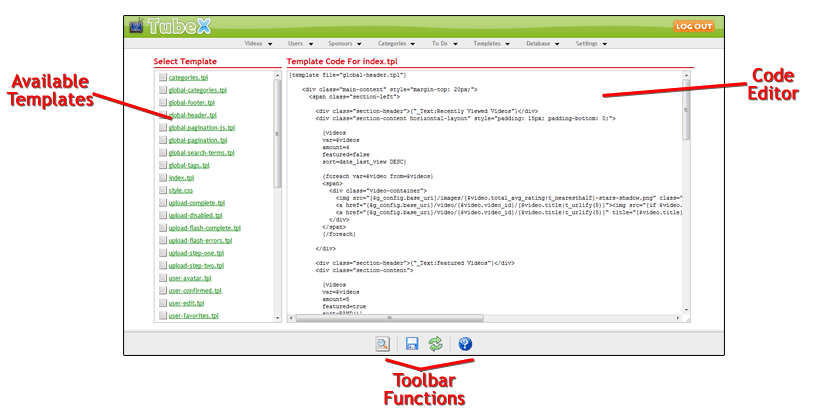

Site Templates
Template Editing Interface
Editing the site templates is done through the Templates > Site Templates function in the control panel. That interface will look
something like this:
Search and Replace

-
Available Templates - This section will list all of the available site templates that you can edit. When you first access
the page, only this section will be shown. Click on a template name to load that template for editing.
Code Editor - This is the text input box where you can make modifications to the template code. When you first access this interface, this field will not be visisble. Click on one of the available templates to load that template and make the code editor visible.
Toolbar Functions - Use the toolbar functions to peform the following actions:
 Click this icon to bring up the Search and Replace dialog where you can perform a search and replace on many templates at once.
Click this icon to bring up the Search and Replace dialog where you can perform a search and replace on many templates at once. Click this icon to save the currently loaded template
Click this icon to save the currently loaded template Click this icon to reload the template code for the currently loaded template. This is useful when you do a search and replace which
affects the current template you are editing.
Click this icon to reload the template code for the currently loaded template. This is useful when you do a search and replace which
affects the current template you are editing. Click this icon to access this documentation file
Click this icon to access this documentation file
TubeX allows you to make quick changes to your templates in bulk with the Search and Replace function. When you access the Search and Replace function a dialog will appear that will allow you
to select the templates that you want to perform this action on, the code to search for in the template, and the replacement code to use. Multiple templates can be selected by holding down the shift or ctrl
keys on your keyboard as you click on templates in the selection list. Once you have selected the templates and entered the search and replacement code, press the Apply Changes button to start the task.
Once completed a notification message will be displayed letting you know how many replacements were made.
Custom Templates
In addition to the default templates shipped with the software, it is also possible to create custom templates that you can use to display any information that you like. The software ships with an example
custom template named custom-rss-feed-newest.tpl which generates an RSS feed of the most recently added videos. Custom templates can be used for any purpose that you like.
The custom.php script is responsible for displaying the custom template pages, and accepts the t= parameter as the template name. To view the example custom template custom-rss-feed-newest.tpl you would use this URL format:
It is also possible to use mod_rewrite rules to create search-engine friendly URLs for your custom templates. The default .htaccess file included with the software gives an example of how this can be done for the custom-rss-feed-newest.tpl custom template:
You can add as many mod_rewrite rules to the .htaccess file as you need!
Templates & Their Variables
Naming
Custom templates will need to be named using the following format:
- custom-TEMPLATE_NAME.tpl
- custom-rss-feed-top-rated.tpl
Creating
Once you have determined the filename you want to use for the custom template, you can simply create an empty file with that name and upload it to the directory containing the template set you have selected.
For example, if you are using the Default-Blue-Rewrite template set, you would upload the custom template file to the templates/Default-Blue-Rewrite directory of your TubeX installation. Once the file is uploaded,
set it's permissions to 666 which will allow you to edit that file through the control panel interface.
Viewing
Now that the custom template file has been created, you will need to setup the HTML and template code. This can be done just like you were editing any other template file. Before you can view the output from
the template it will be necessary to load and save the template so it can be processed and compiled for use by the software.
The custom.php script is responsible for displaying the custom template pages, and accepts the t= parameter as the template name. To view the example custom template custom-rss-feed-newest.tpl you would use this URL format:
- http://www.yoursite.com/tubex/custom.php?t=rss-feed-newest
It is also possible to use mod_rewrite rules to create search-engine friendly URLs for your custom templates. The default .htaccess file included with the software gives an example of how this can be done for the custom-rss-feed-newest.tpl custom template:
RewriteRule ^feeds/newest/?([0-9]+)?/?$ custom.php?t=rss-feed-newest&p=$2 [L]
You can add as many mod_rewrite rules to the .htaccess file as you need!
All of the site templates will have the following two variables set:
-
$g_logged_in - This will be true if the user viewing the page is an authenticated user, or false otherwise
$g_config - The software settings (see Common Template Variables)
categories.tpl
-
This template is used for the categories page which will display a list of your categories. Your users will be able to click on the category links to browse
the videos in the category they select.
$g_loc_categories - This will be set to true only for this template to indicate that the categories page is being viewed
global-categories.tpl
-
This template is designed to be used with the {template} function, and contains the template code necessary to display a list of your categories in the sidebar
(or any location you choose) of your site.
global-footer.tpl
-
This template is designed to be used with the {template} function, and contains the template code that will be used as the footer for all of the site pages
global-header.tpl
-
This template is designed to be used with the {template} function, and contains the template code that will be used as the header for all of the site pages
global-pagination-js.tpl
-
This template is designed to be used with the {template} function, and contains the template code that will be used to generate pagination links for paginated
interfaces that require JavaScript to jump between the pages (currently only user-my-videos.tpl).
global-pagination.tpl
-
This template is designed to be used with the {template} function, and contains the template code that will be used to generate pagination links for paginated
interfaces.
global-search-terms.tpl
-
This template is designed to be used with the {template} function, and contains the template code necessary to display a tag cloud of popular search terms in the
sidebar (or any location you choose) of your site.
global-tags.tpl
-
This template is designed to be used with the {template} function, and contains the template code necessary to display a tag cloud of popular tags in the
sidebar (or any location you choose) of your site.
index.tpl
-
This template controls the main page of your TubeX site.
$g_loc_home - This will be set to true only for this template to indicate that the main page is being viewed
style.css
-
This is not actually a template, but can still be edited through the template editor. This is the style sheet that is used for all of the site templates.
upload-complete.tpl
-
This template will be displayed when a user finishes uploading a video. Note that this template is used only for uploads where the user has to use a standard upload
form and not the recommended Flash based upload.
$g_loc_upload - This will be set to true only for this template to indicate that the upload page is being viewed
$g_video - This will contain the video information (see Common Template Variables)
$g_form - Identical to $g_video
upload-disabled.tpl
-
This template will be displayed when a user tries to access the upload interface but video uploads have been disabled by the administrator
$g_loc_upload - This will be set to true only for this template to indicate that the upload page is being viewed
upload-flash-complete.tpl
-
This template will be displayed when a user finishes uploading a video using the Flash based upload system. Note that this template does not include the HTML code necessary
for a full page (i.e. no <html>, <head>, or <body> tags) since the code from this template will be inserted into the already visible page after the upload completes.
$g_loc_upload - This will be set to true only for this template to indicate that the upload page is being viewed
$g_video - This will contain the video information (see Common Template Variables)
$g_form - Identical to $g_video
upload-flash-errors.tpl
-
This template will be displayed when a user uploads a video using the Flash based upload system but there are errors with the data they submitted. Note that this template does
not include the HTML code necessary for a full page (i.e. no <html>, <head>, or <body> tags) since the code from this template will be inserted into the already
visible page after the upload completes.
$g_loc_upload - This will be set to true only for this template to indicate that the upload page is being viewed
$g_errors - This will an array of error messages
upload-step-one.tpl
-
This template controls step one of the video upload process and will gather the initial video information (title, description, etc) from the user. This template will also be
re-displayed if the user submits invalid data.
$g_loc_upload - This will be set to true only for this template to indicate that the upload page is being viewed
$g_errors - An array of error messages if the data submitted contained invalid information, empty otherwise
$g_tag_min_length - The minimum length allowed for each tag that is submitted
$g_custom_fields - An array containing the custom database fields for videos, if any have been created
$g_year - The current year
$g_form - The data that the user submitted if it is necessary to redisplay this page, empty otherwise
upload-step-two.tpl
-
This template controls step two of the video upload process where the user will actually select the video file they want to upload. This template will also be redisplayed if
the Flash based upload system isn't used and errors are encountered with the uploaded video.
$g_loc_upload - This will be set to true only for this template to indicate that the upload page is being viewed
$g_errors - An array of error messages if the data submitted contained invalid information, empty otherwise
$g_form - The data that the user submitted if it is necessary to redisplay this page, empty otherwise
$g_file_types - A string to specify what video file extensions are allowed (passed to the Flash upload system)
$g_cookie - The user's login cookie (passed to the Flash upload system)
user-avatar.tpl
-
This template will be displayed when a user wishes to modify their avatar image. It is also re-displayed both for a successful and un-successful avatar upload.
$g_username - The username of the authenticated user accessing this page
$g_errors - An array of error messages (if the uploaded avatar was invalid), empty otherwise
$g_success - Flag set to true if the uploaded image has been successfully saved as the new avatar, empty otherwise
user-confirmed.tpl
-
This template will be displayed when new user accounts must be confirmed by e-mail and a user has clicked on the confirmation link in the e-mail message they received.
It will be displayed both when the confirmation is successful and un-successful.
$g_user - The user account data of the confirmed user (if the confirmation code was valid), empty otherwise
(see Common Template Variables)
$g_errors - An array of error messages (if the confirmation code was invalid), empty otherwise
user-edit.tpl
-
This template will display the form where a user can update their user account settings. It is also re-displayed when invalid data is submitted or the
account data is successfully updated.
$g_username - The username of the authenticated user accessing this page
$g_custom_fields - An array containing the custom database fields for users, if any have been created
$g_errors - An array of error messages (if the submitted data is invalid), empty otherwise
$g_success - Flag set to true if the user account data has been successfully updated, empty otherwise
user-favorites.tpl
-
This template will display when a user views their favorites. This template supports pagination.
$g_username - The username of the authenticated user accessing this page
g_page_number - The current page number that the user is viewing
user-login.tpl
-
This template controls the user login page. It will be re-displayed if the user enters invalid login information.
$g_referrer - The referring URL from which the user came, if any
$g_loc_login - This will be set to true only for this template to indicate that the login page is being viewed
$g_errors - An array of error messages (if the submitted data is invalid), empty otherwise
$g_form - The data that the user submitted if it is necessary to redisplay this page, empty otherwise
user-menu.tpl
-
This template is designed to be used with the {template} function, and contains the template code that will be used to generate the user menu that is
displayed in the user account interfaces (my account, my videos, etc).
$g_username - The username of the authenticated user accessing this page
user-my-account.tpl
-
This template controls the My Account interface where a user can see their current profile and access other areas of the account management interface.
$g_username - The username of the authenticated user accessing this page
$g_loc_my_account - This will be set to true only for this template to indicate that the my account page is being viewed
$g_num_favorites - The total number of favorites the user has created
user-my-videos.tpl
-
This template controls the My Videos interface where a user can see their current videos. This template supports pagination.
$g_username - The username of the authenticated user accessing this page
$g_page_number - The current page number that the user is viewing
$g_my_videos_term - The search term the user entered, if any
$g_sorter - The sorting option the ser selected, if any
$g_videos_sorter - The sorting method to use for videos, useful for passing to the sort option of the {videos} template function
user-profile.tpl
-
This template controls the profile page where a user's profile can be viewed by other site visitors.
$g_username - The username of the account who's profile is being viewed
user-register-complete.tpl
-
This template will be displayed after a user succesfully submits account information for creating a new account.
$g_user - The account data that the user submitted (see Common Template Variables)
$g_form - Identical to $g_user
user-register.tpl
-
This will control the account signup form which users will need to fill in to create an account. This will also be re-displayed if the user submits invalid data.
$g_loc_register - This will be set to true only for this template to indicate that the register page is being viewed
$g_errors - An array of error messages (if the submitted data is invalid), empty otherwise
$g_form - The data that the user submitted (if it is necessary to redisplay this page), empty otherwise
$g_custom_fields - An array containing the custom database fields for users, if any have been created
$g_year - The current year
user-reset-confirmed.tpl
-
This template will be displayed when a user has clicked on the confirmation link in the e-mail message they received after initiating a password reset.
It will be displayed both when the confirmation is successful and un-successful.
$g_user - The user account data of the confirmed user (if the confirmation code was valid), empty otherwise
(see Common Template Variables)
$g_password - The new password generated for the account
$g_errors - An array of error messages (if the confirmation code was invalid), empty otherwise
user-reset-found.tpl
-
This template will be displayed when a user initiates a password reset and their e-mail address has been found in the database.
$g_user - The user account data of the located account (see Common Template Variables)
user-reset.tpl
-
This controls the password reset form. It will be re-displayed if the user enters an invalid e-mail address.
$g_errors - An array of error messages (if the submitted data is invalid), empty otherwise
$g_form - The data that the user submitted (if it is necessary to redisplay this page), empty otherwise
user-video-edit.tpl
-
This template wil be displayed when a user wishes to edit one of their videos. It will also be re-displayed both when the video is successfully updated and when invalid
data is submitted.
$g_errors - An array of error messages if the data submitted contained invalid information, empty otherwise
$g_tag_min_length - The minimum length allowed for each tag that is submitted
$g_custom_fields - An array containing the custom database fields for videos, if any have been created
$g_year - The current year
$g_form - The data that the user submitted if it is necessary to redisplay this page, empty otherwise
$g_thumbs - An array containing the preview thumbnails for the video, if any
video-comments-iframe.tpl
-
This template controls the display of video comments in an <iframe> on the video page. This template supports pagination.
$g_video_id - The ID number of the video who's comments are being viewed
$g_page_number - The page number that the user is viewing
video-comments.tpl
-
This template controls the standalone video comments page. This template supports pagination.
$g_video_id - The ID number of the video who's comments are being viewed
$g_page_number - The page number that the user is viewing
video-player-flash.tpl
-
This template controls the HTML used for videos that can be played with a Flash video player (FLV, MP4). For use in the flv option of the {player} template function.
video-player-other.tpl
-
This template controls the HTML used for videos that cannnot be played with the other player types. For use in the other option of the {player} template function.
video-player-quicktime.tpl
-
This template controls the HTML used for videos that can be played with a Quicktime video player (MPEG, MOV). For use in the qt option of the {player} template function.
video-player-silverlight.tpl
-
This template controls the HTML used for videos that can be played with a Silverlight video player (WMV). For use in the wmv option of the {player} template function.
videos-browse.tpl
-
This template controls the Browse Videos page. This template supports pagination.
$g_loc_videos - This will be set to true only for this template to indicate that the browse videos page is being viewed
$g_page_number - The page number the user is viewing
$g_sort - The sorting option that the user selected
$g_timeframe - The timeframe that the user selected
$g_videos_sorter - The sorting method to use for videos, useful for passing to the sort option of the {videos} template function
$g_loc_videos_popular - This will be set to true only if the user is viewing videos by popularity
$g_loc_videos_top_rated - This will be set to true only if the user is viewing videos by rating
$g_loc_videos_most_rated - This will be set to true only if the user is viewing videos by number of ratings
$g_loc_videos_most_discussed - This will be set to true only if the user is viewing videos by number of comments
$g_loc_videos_top_favorited - This will be set to true only if the user is viewing videos by number of favorites
$g_loc_today - This will be set to true only if the sorting timeframe is today
$g_loc_week - This will be set to true only if the sorting timeframe is this week
$g_loc_month - This will be set to true only if the sorting timeframe is this month
$g_loc_all_time - This will be set to true only if the sorting timeframe is all time
videos-by-category.tpl
-
This template will be displayed when a user selected to view videos in a specific category. This template supports pagination.
$g_category_url - The URL Name for the category the user selected
$g_page_number - The page number that the user is viewing
videos-by-search.tpl
-
This template controls the end-user search results page. This template supports pagination.
$g_term - The search term that the user entered
$g_category_id - The ID of the category the user selected to search in
$g_page_number - The page number that the user is viewing
videos-by-tag.tpl
-
This template will be displayed when a user selects to view videos that contain a specific tag. This template supports pagination.
$g_tag - The tag that the user selected
$g_page_number - The page number that the user is viewing
videos-newest.tpl
-
This template controls the Newest Videos page. This template supports pagination.
$g_loc_newest - This will be set to true only for this template to indicate that the newest videos page is being viewed
$g_page_number - The page number that the user is viewing
video-watch.tpl
-
This template controls the page where users will actually view a video.
$g_video_id - The ID number of the video that is being viewed
$g_private - A flag to indicate if the video is private (true), or false otherwise
$g_private_id - If the video is private the special ID that allows access to view the video